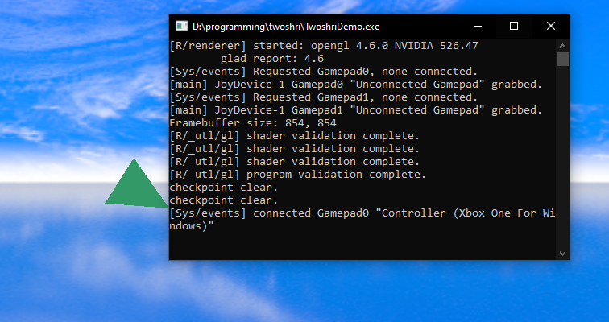
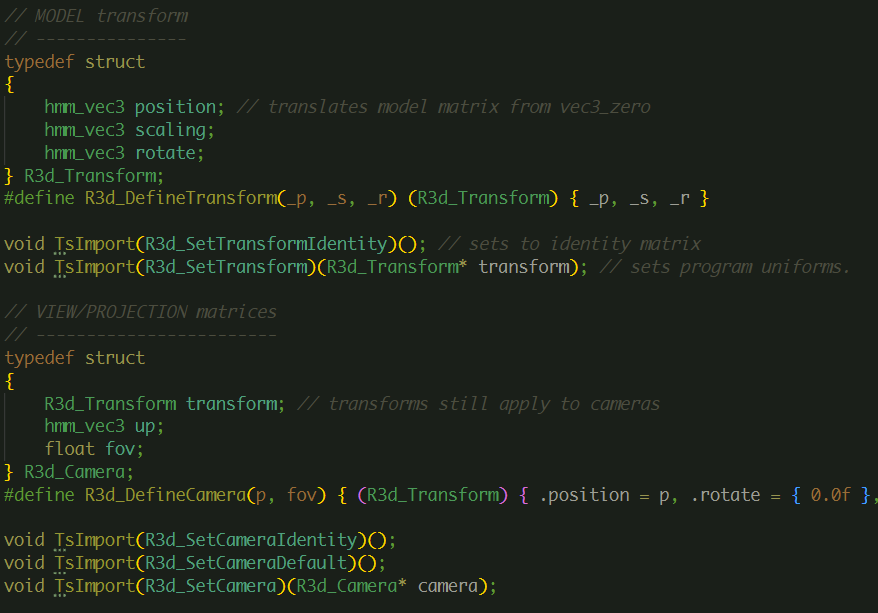
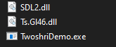
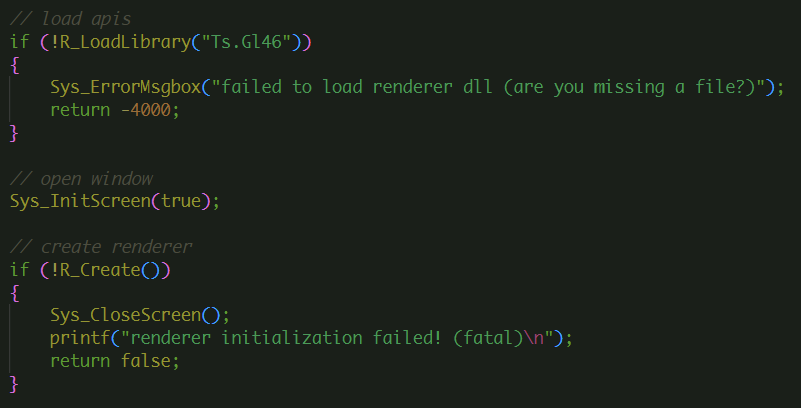
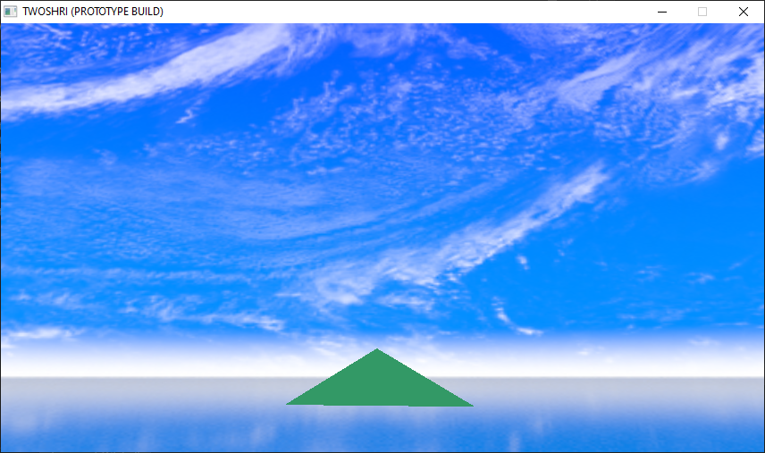

Progress has been slow these past few months, but it's progress nonetheless (Sorry for the radio silence, 11th grade really been crazy).
Since this is the first progress report of many, I'll summarize what I've accomplished in the past year and what I plan to do in 2022.
Table of Progress :) (CLICK ME!!!! IM INTERACTABLE!!!!)
Twoshri was a project which began in late summer 2022, while I was still in Nepal. Some small pieces of code still remain from that time, but currently most major sections of code are post-September.
This primer give you a quick run down on the goals of this project. Twoshri is intended to be a 3D game engine (think goldsrc or the stuff that makes any game run). Nothing more, nothing less. The final goal is a complete technical demo of Twoshri and it's features,
and in a couple years a fully fledged game. Of course, that's easier said than done.
Even up to this point, I have already sunk 40ish hours over the entire lifetime of this development cycle. This project drives me to learn graphics APIs, GPU programming, physics, expand my programming horizons and more.
The Twoshri application source, at the moment, is written entirely in C.
Good-to-Know Vocabulary:
Graphics API: an API which allows me to access features of the GPU to create 3D graphics
Renderer: software which uses the renderer to draw complex graphics, with lighting and other techniques
"Library": a reusable pack of code. A dynamic library would be which could be loaded while the app is running.
WARNING: i will be explaining some things pretty in depth, so if ur really confused let me know and i will try to adjust the next report.
# Gamepad/Controller System
Easier than implementing a keyboard system, but not *easy*. I completed this subproject around the end of fall and it took me about a week. (fun fact: most of this project's core features were made in < 1-week bursts of work)
features
4 player slots (SYS_PLAYER0-4)
checks for disconnect/reconnect automatically
you can prime a controller handle, and wait for a connection
 fig 1: look at that beautiful console output: controllers are indeed being properly loaded and unloaded
At the end of all that, we are left with a fully capable input system which is both robust and was easy to implement. For now Twoshri will remain controller only.
# Renderer Improvements and Dynamic Library Systems
The renderer: the crown jewel of this project.
Over the past couple months the renderer has gone under extensive refactoring and redesign, mostly in planning for future modularity and ease of use, along with the capability to assist me in learning more graphics APIs (Vulkan, DirectX).
Dynamic libraries were the biggest leap this engine has ever seen. Dynamic libraries bring Twoshri to the next level technically (in perspective, this is about where the gaming industry was around the release of Quake 2 in 1997) and bring many possiblilities in the future
such as multithreading, raytracing, and allowing the user to pick their own renderer. Twoshri's design revolves around its renderer, and a solid foundation here will secure this project's success.
Soon enough, the renderer will be capable of renderering complex 3D meshes, along with the core app's ability to load and manage resources.
How does the dynamic library work?
The dynamic library is based on the Twoshri renderer headers, which are a set of code definitions for all possible backends. Here's an excerpt!

At runtime, the application loads a backend for Ts.Renderer from a DLL or other dynamic library (Fig. 3). The Twoshri renderer specification provides a stable base for future renderers to built on, and I change and update the renderer almost every time I boot up my editor. It is crucial to this project.
Renderer Photo Gallery

fig 2. Ts.Gl46 is my OpenGL renderer

fig 3. you can see the renderer being loaded from Ts.Gl46 here in main.c (check source?)

fig 4. such a pretty blue sky, thanks to the Ts.Gl46 skybox implementation
Soon enough, the Twoshri renderer will be able to render more than just a single spinning triangle in a pretty blue fantasy world. (Lighting and more!)
fig 5. a video demo! all done in real time. WOW! look at those graphics. so real.
That should about wrap it up for Progress Report #1. I glossed over many many details of course. It's hard to summarize 4 months in one article. If you have any questions, just email or something. Many things are to come. including:
audio
mesh loading
resource manager
3d scenes
I hope you are excited as I am :) see you in the next report.